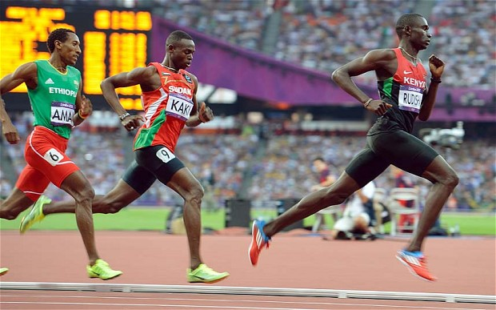
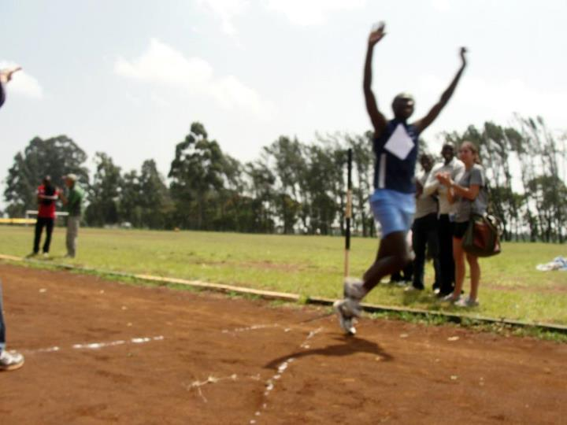
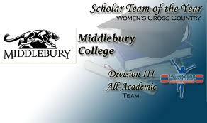
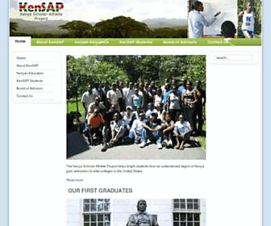
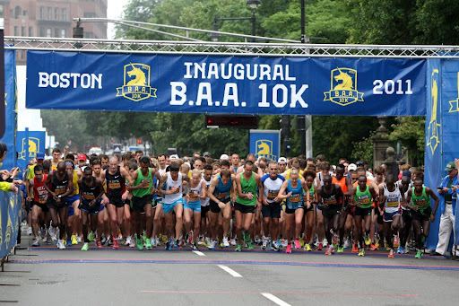

Go back to my CS101 page.
To many, running is never fun. Maybe you think so too and guess what, I'm not surprised!
"IT IS INDEED A PAINFUL EXPERIENCE!"
But the outcome is always so good!
That doesn't mean it'salways about winning. Infact, just hanging out with the awesome Midd XC team is enough for me!
So I started running about 1 year ago after I joined KenSAP which means Kenya-Scholar Athlete Project.

It turned out I could perform this "means of terestial locomotion" as Wikipedia calls it.
And now I am racing in the NESCAC league.
I am aiming at participating in the Boston Marathon 10 K run in two years time.

And ooh incase you haven't figured that out yet, David Rudisha is my hero!